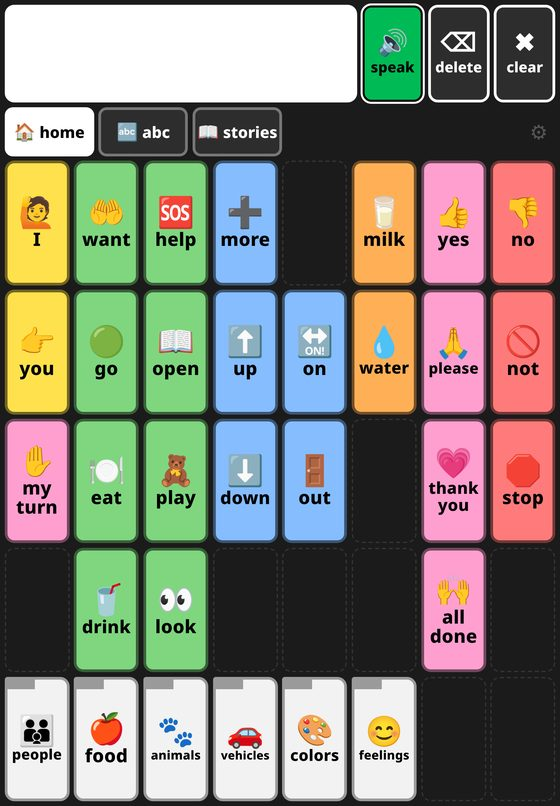
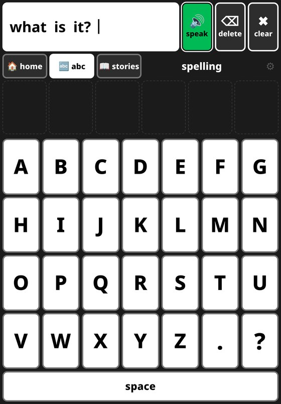
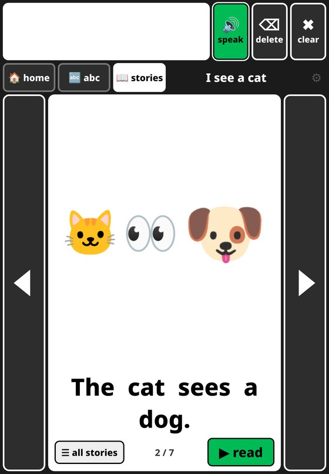
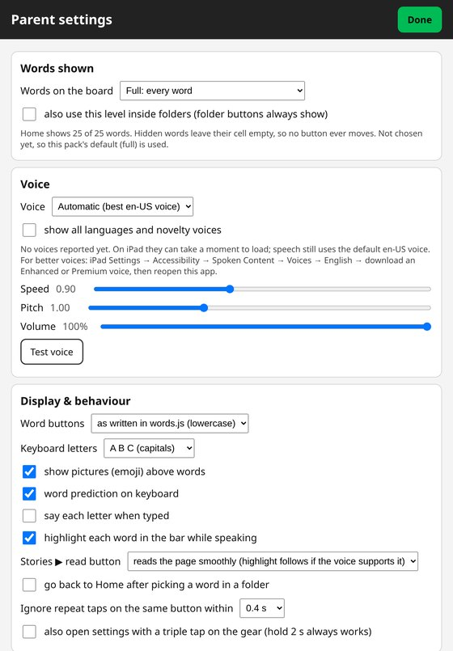

ANOVA Language
App · AAC word board
A free word board for people who communicate by tapping words instead of speaking. It's a web app for iPad and other tablets, and it works offline once it's installed.
Try the app Repo and setup guide
Who it's for
- Families of nonspeaking or minimally speaking kids who want a board at home, including while they wait on an insurance-funded device.
- Early readers and spellers who are ahead of their speech: there's a full keyboard with word prediction.
- Speech therapists, teachers, and tinkerers who want an open, editable board with no account or subscription.

How it works
- Tap a word to hear it and add it to the message bar. Tap "speak" to say the whole message.
- Buttons never move. Words are shown in levels (Starter, Middle, Full, or Custom), and a hidden word leaves an empty cell, so motor memory carries over as the board grows.
- Colors follow word type (a modified Fitzgerald key).
- Spelling keyboard (A to Z) with word prediction.
- Read-along stories with pictures. Turning a page never speaks; tapping a word or "read" does.
- Personal words, stories, photos, and recordings go in a pack that's imported on the device and stays there. Nothing is uploaded.



Why it's free
Dedicated speech devices often cost several thousand dollars, and commercial iPad AAC apps cost a few hundred. This one runs on a tablet you may already have. It's a home option, not a replacement for an evaluation by a speech-language pathologist, and it's not a medical device.
How it's built
Plain HTML, CSS, and JavaScript. No build step, frameworks, ads, analytics, or network calls. Installs as a home-screen web app and works offline. MIT license.
Status
Version 1.2.8, started September 2026 and actively developed. Recent work: word levels, letter-name speech fixes for iOS, and pictures on story pages.
About the name
ANOVA is a nod to analysis of variance, the statistics term. Language learning varies a lot from person to person, and the board is built to adapt to that. The app itself doesn't do any statistics.